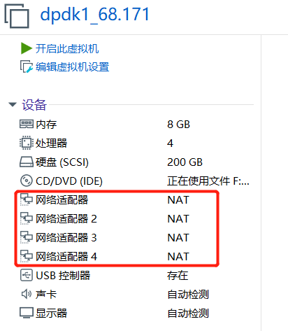
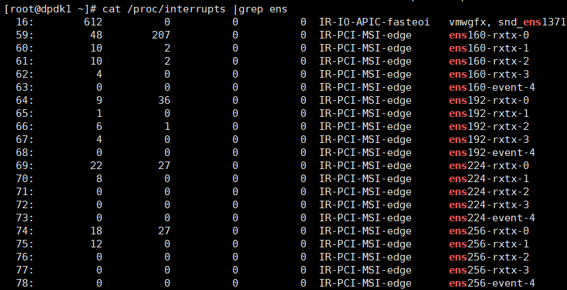

8. rocky 9.1 DPDK
date: 2023-02-04
VMWARE 加网卡

编辑对应的 dpdk1.vmx，修改所有e1000为vmxnet3 ，多队列网卡
ethernet0.virtualDev = "vmxnet3"
ethernet0.wakeOnPcktRcv = "true"
...
ethernet1.virtualDev = "vmxnet3"
ethernet1.wakeOnPcktRcv = "true"
ethernet2.virtualDev = "vmxnet3"
ethernet2.wakeOnPcktRcv = "true"
ethernet3.virtualDev = "vmxnet3"
ethernet3.wakeOnPcktRcv = "true"
[root@rocky91 ~]# dmesg |grep ens
[ 0.794713] ACPI: Added _OSI(3.0 _SCP Extensions)
[ 5.571790] vmxnet3 0000:1b:00.0 ens256: renamed from eth2
[ 5.590331] vmxnet3 0000:0b:00.0 ens192: renamed from eth0
[ 5.615548] vmxnet3 0000:13:00.0 ens224: renamed from eth1
[ 5.632393] vmxnet3 0000:1b:00.0 ens256: intr type 3, mode 0, 5 vectors allocated
[ 5.632872] vmxnet3 0000:1b:00.0 ens256: NIC Link is Up 10000 Mbps
[ 5.716301] vmxnet3 0000:0b:00.0 ens192: intr type 3, mode 0, 5 vectors allocated
[ 5.716640] vmxnet3 0000:0b:00.0 ens192: NIC Link is Up 10000 Mbps
[ 5.774846] vmxnet3 0000:13:00.0 ens224: intr type 3, mode 0, 5 vectors allocated
[ 5.775629] vmxnet3 0000:13:00.0 ens224: NIC Link is Up 10000 Mbps
[ 6.497363] IPv6: ADDRCONF(NETDEV_CHANGE): ens224: link becomes ready
[ 6.497983] IPv6: ADDRCONF(NETDEV_CHANGE): ens256: link becomes ready
[root@rocky91 ~]# cat /proc/interrupts |grep ens
75: 7 67 0 185 IR-PCI-MSI 5767168-edge ens192-rxtx-0
76: 3 1 45 0 IR-PCI-MSI 5767169-edge ens192-rxtx-1
77: 0 11 0 9 IR-PCI-MSI 5767170-edge ens192-rxtx-2
78: 1 42 0 105 IR-PCI-MSI 5767171-edge ens192-rxtx-3
79: 0 0 0 0 IR-PCI-MSI 5767172-edge ens192-event-4
[root@dpdk1 ~]# cat /proc/interrupts |grep ens vmxnet3 (4CPU) 
1G大页
vi /etc/default/grub
#GRUB_CMDLINE_LINUX="default_hugepagesz=1G hugepagesz=1G hugepages=2 isolcpus=2-3 iommu=pt intel_iommu=on"
GRUB_CMDLINE_LINUX="resume=/dev/mapper/rl_rocky91-swap rd.lvm.lv=rl_rocky91/root rd.lvm.lv=rl_rocky91/swap default_hugepagesz=1G hugepagesz=1G hugepages=4 isolcpus=2-3 iommu=pt intel_iommu=on"
grub2-mkconfig -o /boot/grub2/grub.cfg
reboot
dmesg | grep -e DMAR -e IOMMU
cat /proc/cmdline | grep iommu=pt
cat /proc/cmdline | grep intel_iommu=on
[root@rocky91 ~]# cat /proc/meminfo |grep Huge
AnonHugePages: 4096 kB
ShmemHugePages: 0 kB
FileHugePages: 0 kB
HugePages_Total: 2
HugePages_Free: 2
HugePages_Rsvd: 0
HugePages_Surp: 0
Hugepagesize: 1048576 kB
Hugetlb: 2097152 kB
[root@rocky91 ~]# cat /sys/kernel/mm/hugepages/hugepages-1048576kB/nr_hugepages
4
[root@alma91 ~]# mount | grep huge
hugetlbfs on /dev/hugepages type hugetlbfs (rw,relatime,pagesize=1024M)
使用大页
mkdir /mnt/huge
mount -t hugetlbfs pagesize=1GB /mnt/huge
通过在/etc/fstab文件中添加以下行，可以使挂载点在重新启动后永久存在：
nodev /mnt/huge hugetlbfs pagesize=1GB 0 0
reboot
[root@dpdk1 ~]# mount|grep hugetlbfs
hugetlbfs on /dev/hugepages type hugetlbfs (rw,relatime)
nodev on /mnt/huge type hugetlbfs (rw,relatime,pagesize=1GB)
yum install -y dpdk dpdk-devel dpdk-tools
[root@rocky91 ~]# dpdk-devbind.py -s
Network devices using kernel driver
===================================
0000:0b:00.0 'VMXNET3 Ethernet Controller 07b0' if=ens192 drv=vmxnet3 unused= *Active*
0000:13:00.0 'VMXNET3 Ethernet Controller 07b0' if=ens224 drv=vmxnet3 unused= *Active*
0000:1b:00.0 'VMXNET3 Ethernet Controller 07b0' if=ens256 drv=vmxnet3 unused= *Active*
[root@rocky91 ~]# ip link set ens224 down
[root@rocky91 ~]# ip link set ens256 down
[root@rocky91 ~]# modprobe vfio-pci
[root@rocky91 ~]# dpdk-devbind.py -s
Network devices using kernel driver
===================================
0000:0b:00.0 'VMXNET3 Ethernet Controller 07b0' if=ens192 drv=vmxnet3 unused=vfio-pci *Active*
0000:13:00.0 'VMXNET3 Ethernet Controller 07b0' if=ens224 drv=vmxnet3 unused=vfio-pci
0000:1b:00.0 'VMXNET3 Ethernet Controller 07b0' if=ens256 drv=vmxnet3 unused=vfio-pci
[root@rocky91 ~]# dpdk-devbind.py -b vfio-pci 0000:13:00.0
[root@rocky91 ~]# dpdk-devbind.py -b vfio-pci 0000:1b:00.0
[root@rocky91 ~]# dpdk-devbind.py -s
Network devices using DPDK-compatible driver
============================================
0000:13:00.0 'VMXNET3 Ethernet Controller 07b0' drv=vfio-pci unused=vmxnet3
0000:1b:00.0 'VMXNET3 Ethernet Controller 07b0' drv=vfio-pci unused=vmxnet3
Network devices using kernel driver
===================================
0000:0b:00.0 'VMXNET3 Ethernet Controller 07b0' if=ens192 drv=vmxnet3 unused=vfio-pci *Active*
取消绑定:
dpdk-devbind.py -u 0000:1b:00.0
dpdk-devbind.py -b vmxnet3 0000:1b:00.0 ##绑回vmxnet3
dpdk-testpmd 测试失败！ dpdk-testpmd 测试失败！未查明原因！ dpdk-testpmd 测试失败！
# top 会看到1cpu 100%us
show port stats all
./build/examples/dpdk-helloworld -l 0-3 -n 4
./build/app/dpdk-testpmd -l 2-3 -m 4096 -n 4 -- -i -a --forward-mode=rxonly --rxd=4096 --txd=4096 --rss-ip ## 选到3
./build/app/dpdk-testpmd -l 1-2 -m 4096 -n 4 -- -i -a --forward-mode=rxonly --rxd=4096 --txd=4096 --rss-ip ## 选到2
./build/app/dpdk-testpmd -l 0-3 -m 4096 -n 4 -- -i -a --forward-mode=rxonly --rxd=4096 --txd=4096 --rss-ip ## 选到1
./build/app/dpdk-testpmd -l0-3 -- -i --nb-cores=2 --nb-ports=2 --total-num-mbufs=2048
start
stop
自己build好用！
yum -y groupinstall "Development Tools"
yum install -y python3 python3-pip
pip3 install meson ninja pyelftools -i https://pypi.tuna.tsinghua.edu.cn/simple
yum install -y numactl numactl-devel
export http_proxy=http://10.1.1.12:8118
export https_proxy=http://10.1.1.12:8118
wget http://fast.dpdk.org/rel/dpdk-22.11.1.tar.xz
tar Jxvf dpdk-22.11.1.tar.xz
cd dpdk-stable-22.11.1
meson setup -Dexamples=all build
cd build
ninja
ninja install
自己build好用！